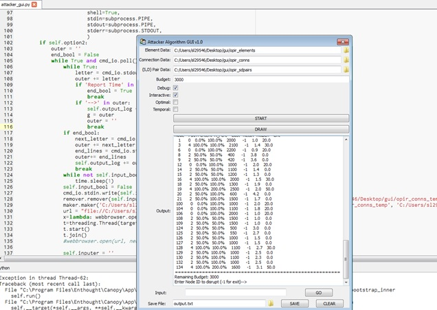
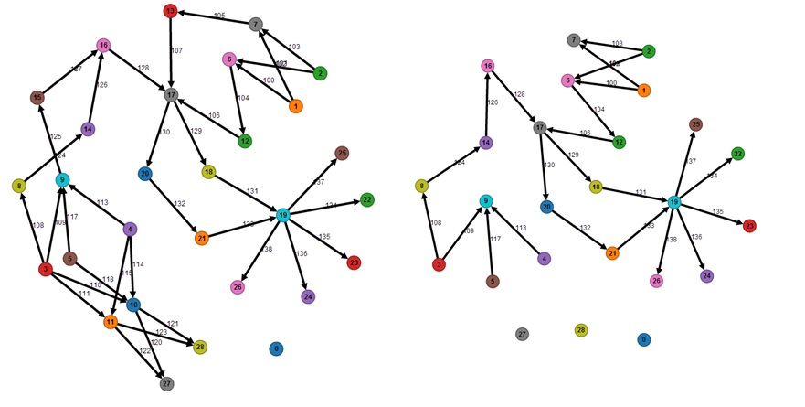
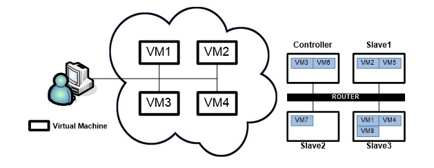
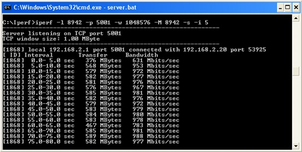

Some of my projects, and the code for this website are on Github!
This page is still under construction and will have active updates!
I spent my summer of 2014 as a software engineering intern in the Network Systems department of the Aerospace Corporation.
Project 1: Interactive Network Visualization Tool and GUI
This project was an interface to a program that simulates a defense network with nodes and links. Each node/link has a value associated and cost of bringing it down. The goal is to simulate an attacker destroying links/nodes between a source and destination, showing which paths an attackers is likely to take, and thus hopefully reinforcing the likely paths.
The GUI interface was developed with the Traits package in Python. It had 3 input files, budget for attack, and had to account for different modes. The interactive mode required using the subprocess module to run the EXE file with inputs provided by the user. The interactive and debug option allows users to see selection of nodes/links and their benefits/effects on the network graph. The user can then choose to either enter the input, from the list of available nodes or delete from the interactive graph. PHP was used as server to register graph deletions and send prompts to the GUI, which runs the ID's in the subprocess.
For the actual graph, I used d3, JS, HTML, and CSS to create an interactive force-directed graph with labeled edges and nodes. Each node or edge could be clicked on and deleted with backspace and different sized graphs were supported. This also interacted directly with the GUI as a visual to the graph created.
Before tackling this project, I had no prior knowledge in Web Design, nor had I ever used d3 or any other libraries used to create visuals. This was an extremely challenging and rewarding experience, and I am now enamored by the visuals d3 can create.
Project 2: Network Performance Interference in Cloud Computing
This project required me to learn about Cloud Computing and network transmission protocols, such as UDP and TCP. I performed testing on two different cloud computing platforms, Amazon Web Services and OpenStack with the aid of software such as iPerf, LookBusy, and File I/O. Testing was performed with different scenarios, such as multiple TCP/UDP sessions running at once, transmitting and receiving processing sharing VM's in AWS, or connections between same nodes and different nodes in OpenStack.
I concluded that cloud computing could be affected by many factors, whereas the greatest impact on performance (the bottleneck) was the physical interface for OpenStack. Physical Location of virtual machines also greatly affect the performance, as if 2 VM's are located in the same node, there is no physical interface bottleneck. CPU speed, router throughput, network interface throughput, and memory are all also contributing factors towards network performance in the cloud computing platform.
